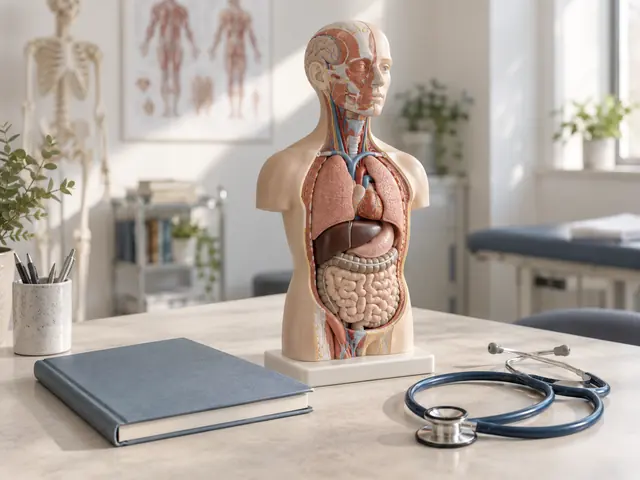
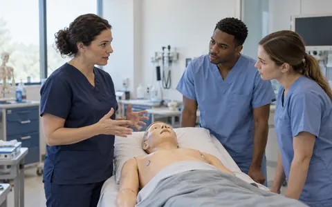

Direction 1
Clinical documentary
Experienced faculty, candid teaching and realistic clinical spaces.
Local review · Five directions
Compare five image styles in the same Attio Mono setting. Each is one representative example; the full set of six page images will follow the direction you select.
All imagery is AI-generated and fictional. No person or setting represents GooCampus staff, a real provider or an existing partnership. Option 2 has been selected. The institutional image set is applied across all six page images.
In context
Previewing institutional architecture in the hero and course card.
Hero composition
GooCampusWorld is expanding its clinical programmes. We’re inviting providers to discuss listings and referrals.
Illustrative AI-generated image
Course-card crop
Observership
ExampleExample Teaching Hospital
Boston, United States
Programme fee
US$2,500
per 4 weeks
Application fee: US$50, separate
Institution, programme dates and fees are fictional.

